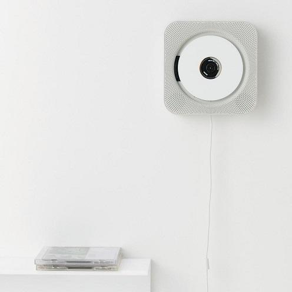

关键词：可行解 | 可能性空间 | 偏见 | 定势 | 功能固着 | 可供性
第一篇中讨论的问题情境，在我的理解中实际上是一种对问题本身明确的表示（Representation）。一旦问题的表示确定下来，便可以开始寻找问题的可行解。我将借助一个简单的问题来开始本篇的思考：
问题1：在手头有一把水果刀的情况下（条件），去掉一个苹果的皮（目标）。
可行解落到这个现实问题里到底指的是什么呢？我觉得可以将其简单分为两个必要的部分，一个是资源（Resource），一个是方法（Method or Approach）。
那么用水果刀给苹果削皮就是一个可行解，其中水果刀是资源，用水果刀给苹果削皮的手法是方法。
接下来我们把问题变一变，把你手上的水果刀抽走，换成一把剪刀。
问题2：在手头有一把剪刀的情况下，去掉一个苹果的皮。
请问问题2有可行解吗？这时你会说我侮辱你的智商，虽说在现实里这样做一定很智障，但用剪刀剪掉苹果的皮，或者“当作”水果刀来削皮，多费些劲还是能行的不是？
但是相信你应该不会在水果刀和剪刀都存在的情况下选择剪刀的，对不：
问题3：在手头同时有一把水果刀和一把剪刀的情况下，去掉一个苹果的皮。
注意问题3中目的只是去掉一个苹果的皮。我们对可行解的选择实际上是在解决一个更强的问题：
问题4：在手头同时有一把水果刀和一把剪刀的情况下，去掉一个苹果的皮，以最优的解决方式。
这其实不是一个完整的问题，因为我们没有给出“最优”的标准。而在我们选择水果刀而不是剪刀时，隐含的标准是什么呢？可以是“费更少的劲削皮的可行解是更优的解”，也可以是“更像正常人的可行解是更优的解”，但无论是什么，只要提到选择，那就一定有相应的标准。有一个明确的标准后，问题就可表示成一个最优化（optimization）问题。
在上一篇中我提到过这样一个观点：解决（明确定义的）问题，等于从解决方案的可能性空间中对可行解进行搜索。搜索其实只是解决问题的过程，目的其实是选择。这里进一步思考，所有的问题都涉及到选择吗，都是可以明确判断是否可解决的吗？这其实就涉及到问题是什么的，呃，问题。在此不去纠结了（以后再找时间纠结）。
好了，一路漂游到这里，我终于想起继续讨论之前的七个概念了。来看下一个题（飞吻还没关掉页面的童鞋）：
问题5：在手头同时有一把水果刀和一把剪刀的情况下，去掉一个梨子的皮。
嗯，我在逗你，当然用水果刀啦。下一个：
问题6：在手头同时有一把水果刀和一把剪刀的情况下，打开一瓶红酒。
嗯，我又在逗你，这TM也能打开？
如果我们假设这TM真打不开，但有一个已经吃掉4个苹果一个梨子的Li Lei继续想着用水果刀打开。那么他就是陷入了定势。啊啊我写得好累啊。这个定势呢，其实说的就是这么一回事，当你需要连续解决多个问题的时候（特别是当问题情境相似时），会有可能将之前的可行解缓存起来，在下个问题时优先尝试。《影响问题解决的因素》中举的水杯量水实验其实是一种稍好的情况，充其量只是忽略了最优解，仍然找到了可行解。但如果之前的可行解太过成功，比如解决了前面所有的问题，那么在下一个它行不通的问题里，你可能会花相当长的时间摆脱这个定势（手拿锤子看什么都是钉子，典型的overfit啊）。
摆脱定势的方法可能是，清除脑中的缓存，清除先验的偏见（bias），从头寻找和评估所有的解，不论是吃个苹果梨子，还是预测美国总统大选，都需要解放思想，实事求是，重新做人（论今天双十一但是我没剁手的原因）。
接着我们再来吃一个苹果，回到问题2。有位Han Meimei小姐为了帮我引出“功能固着”，坚持说她觉得没有可行解，剪刀都是用来剪窗花蜡烛什么的，怎么可能去苹果皮呢？这涉及到我们对资源这个概念更深入的分析。资源是工具、是方法所需依托的实体，是实实在在的物体。当我们认识一个物体的时候，我们更关心的常常是物体的用处和功能。
但是这种认识的过程并不是一次结束的，回想我们第一次接触某一件物体时，我们一般只认识到它对我们而言最主要的功能，并常常会将功能和物体绑定在一起。比如铅笔，我们第一次认识它时知道它的作用是写字，那么之后说起铅笔我们会想到写字，反之亦然，要认识到铅笔可以用来转磁带（暴露年龄），可能是很久以后的事。这种功能固着在物体上的认知，阻碍我们提取剪刀与水果刀的共同点，阻碍我们对资源进行分解（乃至重组），阻碍我们发现可削除苹果皮的、锋利的剪刀刀刃。
没错，物体、资源可以分解成更原子的模块，它们也有各自的更基础的功能。是这些模块的组合使物体这个系统有了我们认知到的功能，功能不是物体本身。在心理学和设计领域，有一个更fancy的词来将物体和功能区分开：可供性（Affordance）。可供性的原意是：一个物体可供你进行的所有可能动作（all actions that are physically possible on an object），假设我们忽略可能动作与功能之间的差距，那么这个“所有”实际上暗示了两点：1. 一个物体可能含有多种功能；2. 我们对一个物体的认识可能是不完整的，只知道其部分而非全部功能。
将物体和功能绑定的功能固着机制，并非一无是处，它帮助我们快速认识事物及其最有用的功能，并且在之后的各种问题情境下更快速地回忆起来（跟定势类似，像是一种更长期的缓存），但是缺点在于“固化”。对可供性的关注促使我们思考惯例以外的可能性，思考一个问题的透明程度，促使我们将问题的解视为可分解重组的系统，思考原研哉所谓的Exformation，从而找到问题解决中被忽略的可行解，或者设计上新的可能性：

可供性之后在设计领域中有了另一个意思：（人）能够很直接、不进行太多思考就能从一个物体上看出的那部分功能（only those action possibilities which one is aware of）。关注这个含义是为了帮助设计师理解物体的功能有显隐之分，需要在设计新事物的时候有意识地调整那条界限，凸显最需要凸显的功能，隐藏不需要的可能，这实际上是对“功能固着”的正向利用。
本篇暂时写到这里啦，涉及到了定势和功能固着两个概念，数数原文中七个概念还剩下四个，争取第三篇一次搞定~